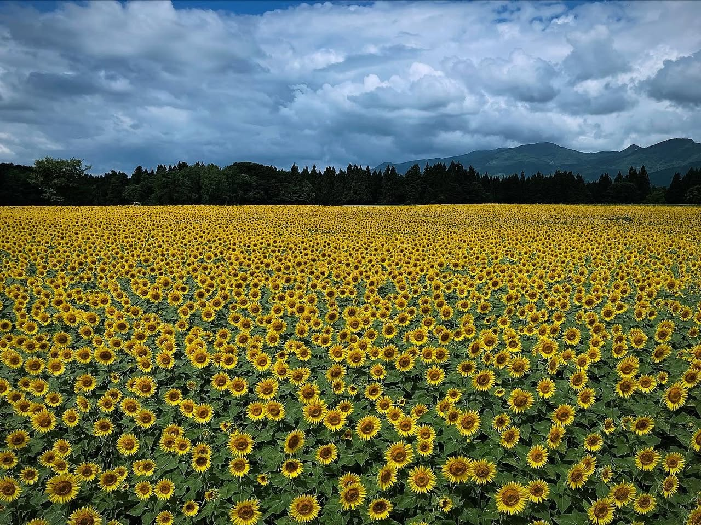

Agosto. Visité la Plaza de Girasoles de Tsunan, en la localidad de Tsunan, distrito de Nakauonuma (Niigata). Unos 650.000 girasoles florecen al mismo tiempo en estos campos — un evento de verano famoso por las montañas de Echigo de fondo.
Un mar de girasoles

En cuanto llegué al lugar, todo el campo de visión se volvió amarillo. Un mar plano de girasoles que no terminaba, y detrás las montañas verdes superpuestas. La escala superó lo que había imaginado.
En Tsunan los girasoles se siembran aprovechando un terreno en bancales, con cada sección floreciendo en momentos ligeramente distintos. Diseño pensado para alargar el periodo de floración — desde los más tempranos hasta los más tardíos — y la ventana óptima cubre desde principios hasta mediados de agosto.
Estaba muy nublado, pero cuando se abría el cielo, el amarillo se encendía. Los girasoles siguen al sol: por la mañana miran al este y por la tarde al oeste. Si vas por la mañana, los tienes de frente para fotografiar.
Verano en Tsunan
Tsunan está en el sur interior de Niigata, en zona de montaña cerca de la frontera con Nagano. En invierno es una de las regiones más nevadas de Japón; en verano es paisaje de meseta verde. El amarillo de los girasoles desplegándose contra esas montañas verdes es una combinación que solo se ve aquí.
Los girasoles llegan a la altura de un adulto, así que entrar en el campo significa que todo lo que te rodea es girasol. Parado en medio, sientes la fuerza del verano con todo el cuerpo.
Al día siguiente, los fuegos de Nagaoka
El 3 de agosto fui a la ciudad de Nagaoka. Era la segunda noche del Gran Festival de Fuegos Artificiales de Nagaoka — uno de los tres grandes festivales de fuegos de Japón, que nació como homenaje a las víctimas del bombardeo aéreo de Nagaoka de 1945 y como promesa de reconstrucción. Se dice que la asistencia entre las dos noches supera el millón de personas.

Los fuegos se lanzan desde el cauce del río Shinano y la escala es de otro nivel. La presión del sonido es distinta. La vibración te llega al pecho. Por más veces que lo veas, no se vuelve algo cotidiano.
Fotos de los fuegos cortesía de: junichi-m.com
El día anterior estaba en medio de un campo de girasoles; la noche siguiente estaba bajo los fuegos. Ambas, escenas muy del verano de Niigata — pero impactos completamente distintos.